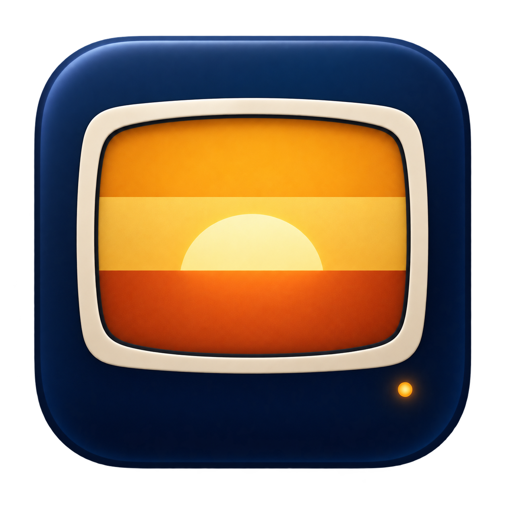
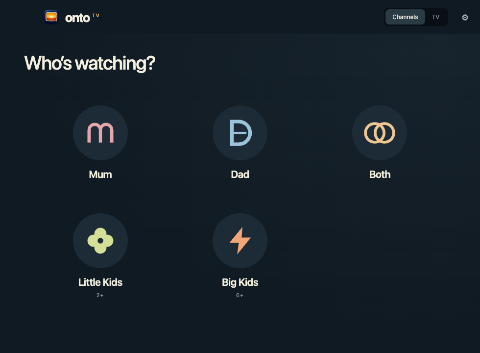
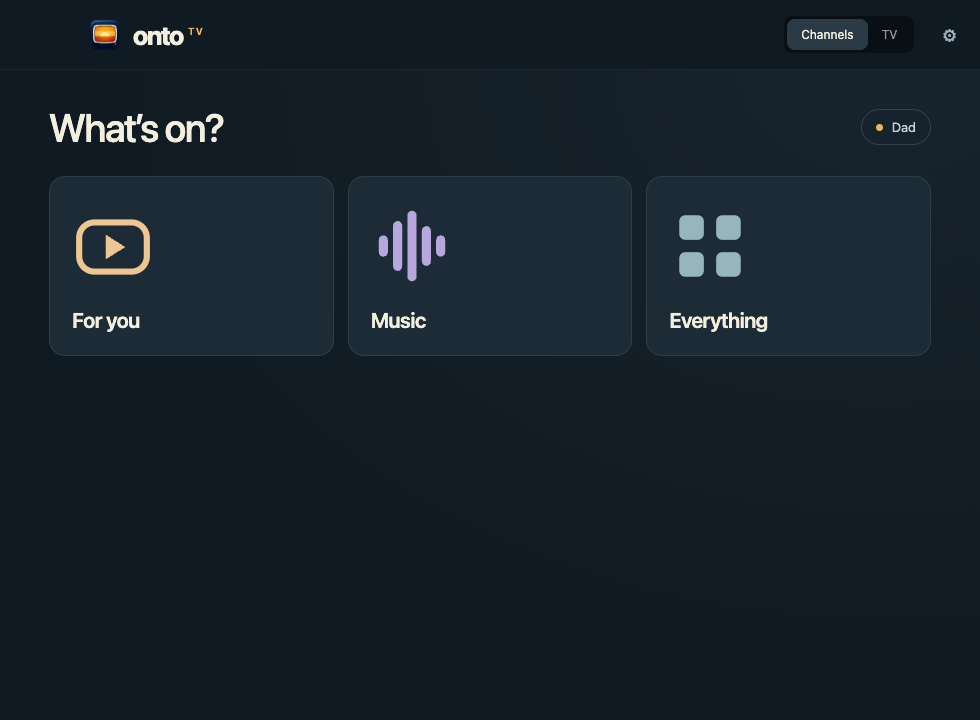

Browse your library
Artwork comes from local video frames. Browsing does not start playback.

onto the TVMac · Samsung · local library
Open the app and your family-friendly channel starts. Change who is watching, choose a channel, and send it to the TV.
View source →
Artwork comes from local video frames. Browsing does not start playback.
Groups and audiences shape the next pick. Skips and completions stay local.
The Mac serves the selected file to a Samsung on the same network and follows the confirmed track.
Install
Node, Python and FFmpeg make the app. Your videos and viewing history stay on your devices.
git clone https://github.com/todd866/onto-the-tv.git
cd onto-the-tv
npm ci
npm run install-app